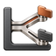
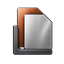

Icons at their actual sizes.
Five new identities and the two existing references. Each mark is displayed at 32, 48, 64 and 128 CSS pixels. Original rendered masters stay unchanged; exports normalize their transparent margin and resize them.





Existing family references
Ferromark
Existing family reference


Ferroni
Existing family reference